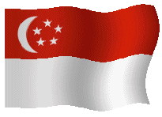

Dulunya Singapura merupakan koloni Inggris dan sekarang menjadi anggota Persemakmuran. Singapura pertama kali bergabung dengan Federasi Malaysia pada pembentukannya pada tahun 1963. Namun, pada 9 Agustus 1965 memisahkan diri dengan Malaysia dan menjadi negara merdeka. Kemerdekaan Singapura selalu diperingati setiap tahunnya dengan berbagai kegiatan, seperti parade nasional, pidato perdana menteri, dan festival kembang api. Tahukah kamu sejarah Singapura? Baca juga: Singapura, Satu-satunya Negara di Asia Tenggara yang Tidak Memiliki Hasil Tambang Sejarah Dilansir Encyclopaedia Britannica (2015), Pulau Singapura awalnya dihuni oleh para nelayan dan bajak laut. Di mana berfungsi sebagai pos terdepan untuk Kerajaan Sriwijaya. Dapatkan informasi, inspirasi dan insight di email kamu. Daftarkan email Dalam prasasti Jawa dan China yang berasal dari abad ke-14, nama Pulau Singapura yang lebih umum adalah Tumasik atau Temasek. Berasal dari kata Jawa "tasek" yang berati laut. Rajendra Chola 1, penguasa Kerajaan Chola India Selatan menyerang pulau tersebut pada 1025. Terjadi serangan lagi oleh Kerajaan Chola pada 1068. Rajendra mungkin menamai kota itu Singapura (Kota Singa), kemudian berubah menjadi Singapura. Menurut Sejarah Melayu, kota itu didirikan oleh pangeran Sri Tri Buana. Dia dikatakan telah melihat seekor harimau, salah mengira itu singa, dan karenanya disebut pemukiman Singapura. Baca juga: Profil Negara ASEAN Pada 1275, Raja Kertanegara penguasa Kerajaan Singasari kemungkinan menyerang Temasek ketika menyerbu Pahang di Pantai Timur Semenanjung. Pada puisi apik Jawa Nagarakrtagama yang ditulis 1365 menyebutkan jika Temasek merupakan salah satu penaklukan Kerajaan Jawa di Majapahit. Pada akhir abad ke-14, Temasek mengalami kerusakan dan digantikan Malaka. Kedatangan Inggris Pada Januari 1819, Sir Stamford Raffles dari Inggris tiba di Singapura. Saat tiba di Singapura, Raffles menjumpai perkampungan kecil di muara sungai Singapura. Perkampungan tersebut berada dibawah Kasultanan Johor yang merupakan dikuasai oleh Belanda. Tak berselang lama, Raffles kembali ke Bengkulu setelah menandatangani perjanjian dengan Kasultanan Johor. Baca juga: Latar Belakang Kesamaan Sejarah dalam Pembentukan ASEAN Di bawah pemerintahan Kolonial Inggris, Singapura berubah menjadi wilayah yang perkembangannya pesat dan membangun pelabuhan yang sangat strategis. Karena letak Singapura berada di tengah-tengah jalur perdagangan antara India dan China. Kondisi itu membuat pedagang-pedagang dari Arab, China dan Indah singgah terlebih dahulu sebelum menuju Indonesia. Sebelum kedatangan Inggris, negara Eropa yang sudah tiba ada Portugis dan Belanda. Bahkan Belanda telah menguasai dan memonopoli perdagangan rempah-rempah Dalam buku Nusantara: Sejarah Indonesia (2008 ) karya Bernard Hubertus Maria Vlekke, Sir Stamford Raffles sebagai pendiri negara Singapura. Status Singapura sebagai wilayah kekuasaan Inggris dikukuhkan lewat perjanjian Inggir- Belanda 1824. Baca juga: Mengapa VOC Disebut Negara dalam Negara? Di mana Kepulauan Melayu dibagi menjadi dua kawasan. Kawasan utara yang terdiri Pulau Pinang, Melaka dan Singapura menjadi wilayah Inggris, sementara di kawasan sebelah selatan di bawah pengaruh Belanda. Pada Perang Dunia (PD) II, Singapura sempat dikuasai oleh Jepang pada 1945. Namun, pada 12 September 1945 Inggris menguasai kembali Singapura. Menjadi negara merdeka Pada 1959, Singapura berdiri sebagai negara di bawah Kerajaan Inggris dan diberi pemerintahan internal. Baca juga: Mengapa Palestina Tidak Diakui Sebagai Negara? Pada 1963, Singapura menjadi negara republik setelah mendapat kemerdekaan dari Inggris. Pada tahun yang sama di bulan September, Singapura bergabung dengan Malaya, Sabah, dan Serawak membentuk Negara Federasi Malaysia. Namun, pada 1965 Singapura keluar dari Federasi dan secara resmi membentuk negara sendiri di bawah Perdana Menteri Lee Kuan Yew. Artikel ini telah tayang di Kompas.com dengan judul "Sejarah 9 Agustus, Singapura Mendeklarasikan Kemerdekaan", Klik untuk baca: https://www.kompas.com/skola/read/2020/08/09/154000769/sejarah-9-agustus-singapura-mendeklarasikan-kemerdekaan?page=all.
